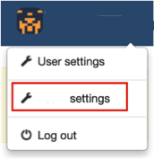
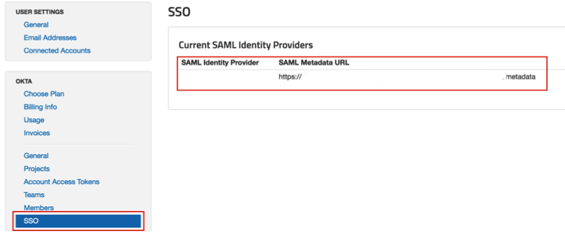
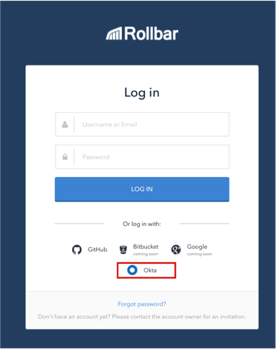

Log in to Rollbar and navigate to the settings for your account by clicking your user name on the top right, and then selecting Settings, as shown below..

Select SSO from the menu on the left, as shown below.

In the form labeled Add Okta as a new SAML Identity Provider, copy and paste the following SAML Metadata URL:
Sign into the Okta Admin dashboard to generate this value.
In Okta, navigate to the General tab for the Rollbar app, and enter your Rollbar Account Name, as shown below.

Done!
Note: Rollbar supports SP-iniated flows and IdP-initiated flows. Just In Time (JIT) provisioning is not supported.
For SP-initiated flows, navigate to https://rollbar.com/<Account Name>/ where <Account Name> is your Rollbar account name, and click the Okta button, as shown below.
